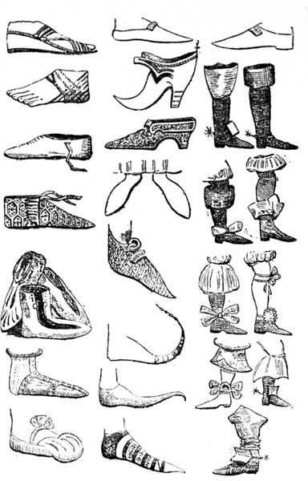
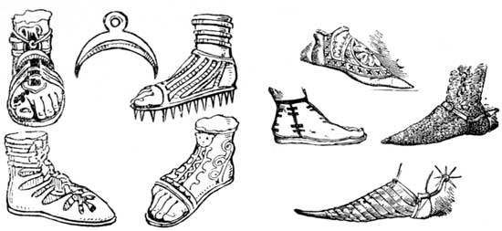
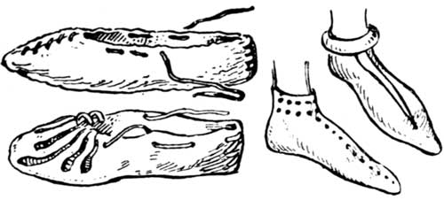
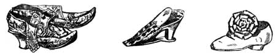
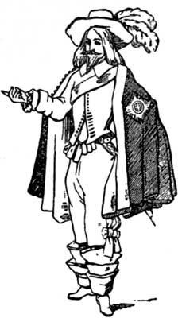
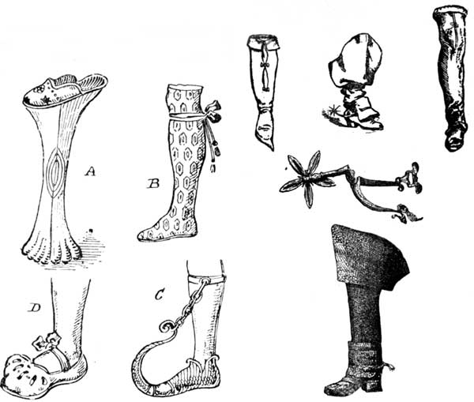
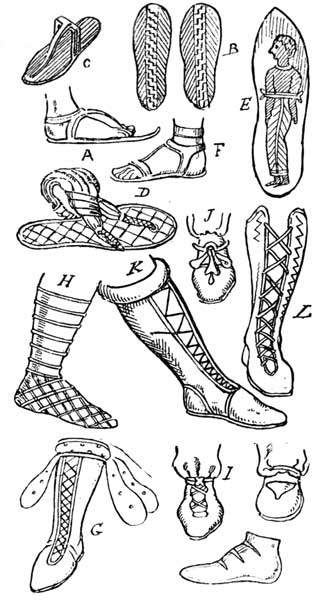

Florence Mary Gardiner, Evolution of Fashion. Davis, ed. from the 1897 edition. [eng]. Cited by chapter/paragraph.
Passages iv.1-iv.35
urn:cts:fuTexts:gardiner.eof.davis:iv.1-iv.35
iv.1CHAPTER IV.
iv.2CURIOUS FOOT-GEAR.
iv.3"A tasteful slipper is my soul's delight."
iv.4--_Milman's "Fazio."_
iv.5A well-shaped foot has been considered from the earliest times one of Nature's kindest gifts, and sober history and fairy lore have combined to give us many interesting particulars respecting this portion of the human anatomy. The similarity of the foot-gear of both sexes makes it impossible to treat the matter separately, and as the subject is practically inexhaustible, I propose only to illustrate the most curious and notable examples.
iv.6One of the finest collection of shoes in the world is that at the Cluny Museum, Paris, formed by the eminent French engraver, the late Jules Jacquemart. This was enlarged by the purchase of the collection of Baron Schvitter. The Queen of Italy has also acquired a large number of historical boots and shoes; and to Mr. Joseph Box, another enthusiastic collector, I am indebted for some of the drawings used for illustrating this article.
iv.7A quaint story is told in a rare book, entitled "The Delightful, Princely, and Entertaining History of the Gentle Craft of Crispin, the Patron Saint of Shoe Makers, and his Brother Crispianus." According to this authority, they were the two sons of the King of Logia (Kent), and lived in the city of Durovenum, otherwise Canterbury, or the Court of the Kentish men. Having embraced Christianity, during the Roman invasion, they were in considerable danger, and at their mother's instigation, to conceal their identity, adopted humble attire, and devoted themselves to the modest craft of shoemaking, under the auspices of a shoemaker at Faversham, to whom they bound themselves for seven years. This industrious citizen appears to have received the appointment of shoemaker to the Court of Maximinus, whose daughter Ursula fell in love with Crispin. After removing the usual obstacles (which, even in those remote times, seem to have obstructed the paths of those who had fallen under the sway of Cupid), this energetic lady engaged the services of a neighbouring friar, and cut the gordian knot by marrying her faithful adorer.
iv.8When primitive man first conceived the idea of producing some contrivance to defend himself from cold, sharp stones, or the heated sand of the desert, his first effort was to fasten to the bottom of his feet soles of bark, wood, or raw hide, which were followed, in due course, by more elaborately made sandals of tanned leather. These were fastened in various ways, but generally by two leathern straps, one round the instep, while the other passed between the first and second toes. Egyptian sandals were sometimes prolonged to a sharp point, and occasionally were made of papyrus, or some flexible material; but the commoner kinds were, as a rule, of wood or leather. Often they had painted upon them the effigy of the wearer's enemy, who was thus literally trodden underfoot. Owing to their proximity, the habits and customs of the Egyptians and Jews were in many respects similar. The same Hebrew word denotes both a sandal and a shoe; and it has been concluded that shoes were probably confined to the upper classes, while sandals were used by those compelled to work; and slaves went barefoot.
iv.9It will be seen from the sketches of Grecian and Roman shoes that they eventually became an elaborate article of dress, bound to the foot and leg with lacings, and ornamented in different ways. The senators had boots of black leather, with a crest of gold or silver on the top of the foot; and soldiers wore iron shoes, heavily spiked, in a similar manner to those now used for cricket, so as to give the wearers a better hold when scaling walls in the attack of fortified places. An iron boot was also used for torturing Christians. As an instance of the luxury so characteristic of the age, it is stated that Roman soldiers often had the spikes on their shoes made of gold. According to the testimony of Seneca, Julius CAesar wore shoes of the precious metal, a fashion emulated by Cardinal Wolsey many centuries after; and Severus was fond of covering his with jewels, to attract the attention of the people as he walked through the streets. The Emperor Aurelian forbade men to wear red, yellow, white, or green shoes, reserving these colours for women; and different shapes were prescribed by legal enactments to be worn for the easy distinguishment of various trades and professions. In the reign of Domitian, the stalls of shoemakers in the public streets were so numerous as to necessitate an edict for their removal.

iv.11Our own ancestors, the Anglo-Saxons, wore shoes of raw cow-hide, reaching to the ankles; and the hair turned outward. Those used by ecclesiastics were a kind of sandal fastened with bands of leather round the instep. The Norman half-boots had soles of wood, while the uppers were of a more pliable material. Those worn by the Crusaders were of chain, and later of plate armour. Very pointed toes were in fashion during the Middle Ages, and these were carried to such a ridiculous length that the dignitaries of the Church considered it necessary to preach against the practice. However, this did not result in its abolition, for we find the courtiers of the day improved upon the prevailing mode by stuffing their shoes, and twisting them into the shape of a ram's horn; the point of which was attached to the knee by a chain. The common people were permitted by law to wear "the pykes on their shoon" half-a-foot, rich citizens a foot, while nobles and princes had theirs two-and-a-half feet long.
iv.12During the Plantagenet period it was usual to wear two shoes of different colours, and they were often slashed on the upper surface, to show the bright hose beneath. These were superseded by a large, padded shoe, gored over the foot with coloured material, a fashion imported from Italy, and exaggerated as much as the pointed shoe had been. Buskins were high boots, made of splendid tissue, and worn by the nobility and gentry during the Middle Ages, generally on occasions of State. They were also largely adopted by players of tragedy. They covered the knee, and were tied just below. The sock, or low shoe, on the other hand, was the emblem of comedy.
iv.13One of the greatest follies ever introduced was the chopine, a sort of stilt which increased the height of the wearer. These were first used in Persia, but appeared in Venice about the Sixteenth Century, and their use was encouraged by jealous husbands in the hope of keeping their wives at home. This desire, however, was not realised, as the ladies went out as usual, and required rather more support than hitherto. Chopines were very ornate, and the length determined the rank of the wearer, the noblest dames having them half-a-yard high. Shakespeare refers to them when he makes Hamlet say:--"Your ladyship is nearer heaven than when I saw you last by the altitude of a chopine." He also alludes to the general use of shoes for the left and right foot, when he speaks of a man:---
iv.14"Standing in slippers which his nimble haste Had falsely thrust upon contrary feet."

iv.16The exercise of the gentle craft of shoemaking was for a long time carried on in monastic institutions, and increased the revenues of the clergy. Richard, the first Abbot of St. Albans, objected to canons and priests of his era associating themselves with tanners and shoemakers, not one of whom, in his opinion, ought to be made a bishop or an abbot. It is said, however, that Pope John, elected in 1316, was the son of a shoemaker at Cahors; and in the description of Absalom, the Parish Clerk, Chaucer tells us, "the upper leathers of his shoes were carved to resemble the windows of St. Paul's Cathedral," which inclines one to believe in their priestly origin.

iv.18[Illustration: MEDIAeVAL SHOES.]
iv.19From various sources, we have descriptions of royal shoes. Richard C[oe]ur de Lion had his boots striped with gold; those of his brother John were spotted with gold in circles. Henry III. had his boots chequered with golden lines, and every square enriched with a lion. In the splendid Court of Edward III., the royal shoes were elaborately embroidered. The coronation shoes of Richard III. were covered with crimson tissue cloth of gold. Henry VIII. is described as wearing square-toed shoes, which were slashed with coloured silk, and exposed a portion of the foot. Some worn by his daughter, Queen Elizabeth, of brocaded silk, are remarkably clumsy in appearance, and have lappets which fasten over the instep. They form a striking contrast to those used by the unfortunate Mary Queen of Scots (now in the possession of Sir James William Drummond), which are of kid, embroidered with coloured silks; the toes are somewhat squarer, but in other respects resemble those in fashion at the present day.

iv.21[Illustration: SHOE OF MARY QUEEN OF SCOTS.]


iv.24[Illustration: MILITARY BOOTS AND SPURS USED AT THE BATTLE OF NASEBY.]
iv.25In speaking of curious foot-gear, the under covering of the leg and pedal extremities must be briefly referred to. Ancient works on costume frequently mention hose, socks, and stockings, which were made of woollen cloth, leather, or linen, and held in place by cross-bands of the material twisted to a little below the knee, either in close rolls, like the hay-bands of the modern ostler, or crossing each other sandal-wise, as they are now worn in some districts of Europe, particularly in Russia and Spain. Cloth stockings, embroidered with gold, are among the articles of dress ordered by Henry III. for his sister Isabel; and of a woman mentioned in the "Canterbury Tales," it is said: "Hire hosen weren of fine scarlet redde, ful streite yteyed (tied), and shoon full moist (supple) and newe."

iv.27In the reign of Henry VII. clocks on stockings are discernible; and the Poet Laureate of this king, describing the dress of the hostess of an inn, gives an indication of how boots were cleaned:
iv.28"She hobbles as she goes, With her blanket hose, Her shoone smeared with _tallow_."
iv.29It is supposed that hose or stockings of silk were unknown in this country before the middle of the 16th century. A pair of Spanish silk hose was presented by Sir Thomas Gresham to Edward VI., his father never having worn any but those made of cloth. In the reign of good Queen Bess, nether socks or stockings were of silk, jarnsey, worsted crewel, or the finest yarn, thread, or cloth, and were of all colours, "cunningly knit and curiously indented in every point, with querks, clocks, open seams, and everything else accordingly." Planche states, in the third year of Elizabeth, Mistress Montague, the Queen's silk-woman, presented Her Majesty with a pair of black silk knit stockings, made in England; and from that time she wore no others, in the laudable desire to encourage their home manufacture by her own example. The Queen's patronage, and the invention, in 1599, of a weaving frame, by William Lee, Master of Arts, and Fellow of St. John's College, Cambridge, gave a great impetus tus to the stocking trade, which has been carried on with considerable success ever since, particularly in the Midland counties of England.
iv.30Spurs can be traced back to the Anglo-Saxon period, which is quite far enough for this purpose. They had no rowels, but were made with a simple point like a goad, and were fastened with leathers. Early in the 15th century spurs were screwed on to a steel shoe, instead of being fastened with straps. They were long in the neck, and the spikes of the rowels of formidable dimensions. From a sketch of a spur worn at the Battle of Naseby, in the reign of Charles I., it will be seen that, as progress was made in armour and military gear, considerable attention was paid to this portion of the soldier's outfit; indeed, it was more elaborate in design than is now considered necessary. From a very early period spurs have been used by both sexes.
iv.31A curious custom was in vogue at the beginning of the present century for ladies to make their own indoor shoes. This fashion was inaugurated by Queen Charlotte, who was particularly deft in handling a beautiful set of shoemaker's tools, mounted in silver, with ivory handles. Tradesmen bitterly complained that worktables in boudoirs were strewn with the implements of their craft; but, like many other feminine fads, it soon passed away. About this period clogs were also used. These were made of wood, and served as a protection to shoes out of doors. A similar contrivance, with the addition of an iron ring, leather strap and toe-cap, is still sometimes worn by farm servants, and is called a patten. Another form of clog, consisting of a laced leather boot with wooden sole, is extensively used by the working classes in the North of England, and the sabot, a wooden shoe, is the ordinary foot-gear of peasants on the Continent.
iv.32It is well known that Chinese women of high rank deform their feet by compressing them in such a manner that it is afterwards almost impossible to walk; and in Davis' interesting description of the Empire of China, he relates that whenever a judge of unusual integrity resigns his post, the people accompany him from his home to the gates of the city, where his boots are drawn off with great ceremony, and are afterwards preserved in the Hall of Justice.
iv.33In Japan a peculiar wooden sandal, having a separate compartment for the great toe, is in common use. Straw slippers are also worn, and a traveller starting on a journey will strap a supply on his back, so that he may have new shoes in case of need. They are lefts and rights, and only cost a halfpenny the pair. Here one never finds those deformities of the feet so common in China, and even in our own country. A graceful carriage depends so much upon the shoes worn. Heavy and stiff ones oblige the wearer to plant the foot solidly at every step. If the toes are very pointed it is at the sacrifice of elasticity, and if the heels are too high the muscles in the ball of the foot are little used.
iv.34Orientals indicate reverence by uncovering their feet, and do so on all occasions when Western nations would remove their hats. Their heads, being generally shaven, are always covered, and are surmounted by a head-dress which could not be replaced without considerable trouble; while for the feet they have loose slippers, with a single sole, made of coloured morocco or embroidered silk, which are easily thrown off. Few things inspire them with greater disgust than for anyone to enter their rooms with shoes on. They think such conduct an insult to themselves and a pollution to their apartment; and it is considered the height of irreverence to enter a church, mosque, or a temple without removing them. Even classical heathenism affords instances of this usage. The Roman women were obliged to go barefoot in the Temple of Vesta; the same rule existed in that of Diana, at Crete; and those who prayed in the Temple of Jupiter also followed this custom.
iv.35In the East, the public removal of the sandal or shoe, and the giving it to another, accompanied by certain words, signifies a transfer of authority or relinquishing possession. We are told in the case of Ruth and Boaz, when her kinsman gave up his right to marry her, in favour of her second husband, "he drew off his shoe." Among the Bedouins, when a man permits his cousin to marry another, or divorces his runaway spouse, he generally says, "She was my slipper; I have cast her off." Again, when shoes are left at the door of an apartment, they denote that the master or mistress is engaged, and even a husband does not venture into a wife's room while he sees the slippers on the threshold. The idea is not altogether unknown among ourselves, as it is expressed in the homely proverb, "to stand in another man's shoes;" or when we speak of coming into a future inheritance as stepping into a "dead man's shoe." Also in flinging the slipper after a departing bride, signifying that the father transfers his authority to the husband.